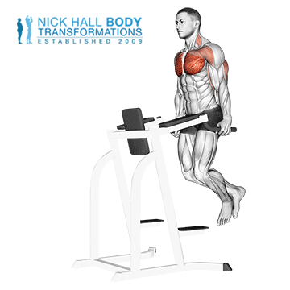

Vaja Dips je odlična vaja za krepitev prsnih mišic, sprednjih deltoidov in tricepsa.
Pri izvajanju te vaje se uporabnik obesi na dva vzporedna drogova in se spusti navzdol. Dovolite, da vaša telesna teža visi, tako da jo podpirajo vaše roke in ramena. Ohranite raven bok. Spustite telo, tako da počasi upogibate komolce in se rahlo nagnete naprej ter nadaljujte navzdol, dokler ne začutite raztezanja v prsih, ramenih in tricepsih. Vaš komolčni sklep naj bo približno pod kotom 90 stopinj na dnu gibanja.
Trajanje: minut
Kalorije: kcal
Vrsta:
Težavnost:
Kratek opis: